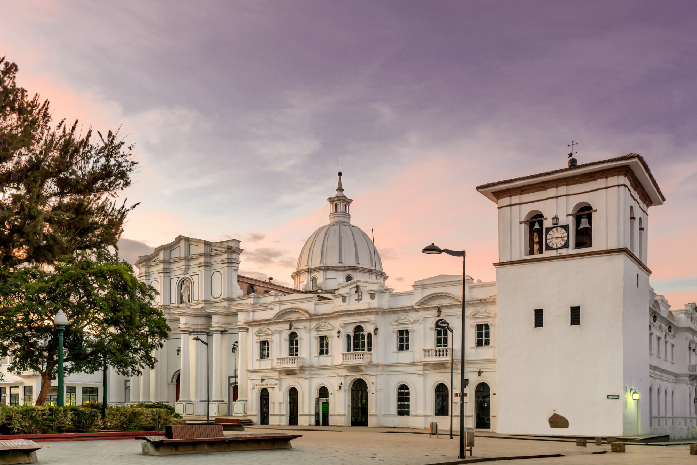

DESCUBREIX POPAYÁN
Popayán, oficialment Assumpció de Popayán, és un municipi colombià, capital del departament del Cauca. Es troba localitzat a la vall de Pubenza, entre la Serralada Occidental i Central al sud-occident del país. Hi té 277 540 habitants, d’acord a les projeccions per al 2015 del cens del DANE (Departament Administratiu Nacional d’Estadístiques) elaborat l’any 2005. La seva extensió territorial és de 512 km², la seva altitud mitjana és de 1760 m sobre el nivell del mar , la seva precipitació mitjana anual de 1.941 mm, la seva temperatura mitjana de 14/19 ° C i distància aproximada de 600 km a Bogotà, capital de Colòmbia. És una de les ciutats més antigues i més ben conservades d’Amèrica, el que es veu reflectit en la seva arquitectura i tradicions religioses, reconeguda per la seva arquitectura colonial i la cura de les façanes que fan part d’un dels pocs sectors històrics del país. Popayán té un dels centres històrics Colonials més grans del país i Amèrica, amb un total aproximat de 236 Pomes de Sector Històric.
El 2005, la UNESCO va designar a la ciutat de Popayán com a Ciutat UNESCO de la Gastronomia per la seva varietat i significat per al patrimoni intangible dels colombians. La cuina caucana va ser seleccionada per mantenir els seus mètodes tradicionals de preparació a través de la tradició oral. El 28 de setembre de 2009 les Processons de Setmana Santa de Popayán van ser declarades per la UNESCO com a Obra Mestra del Patrimoni Oral i Immaterial de la Humanitat.
